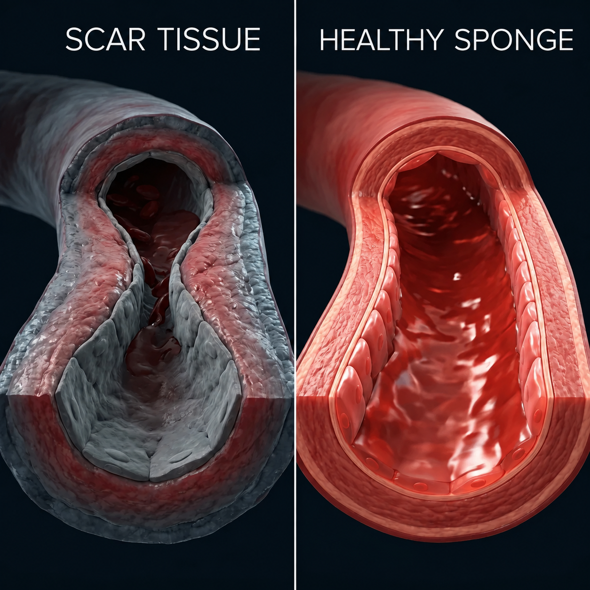
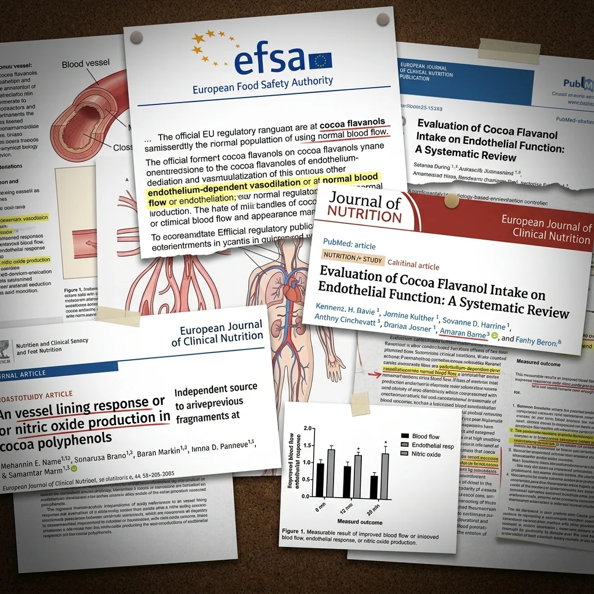
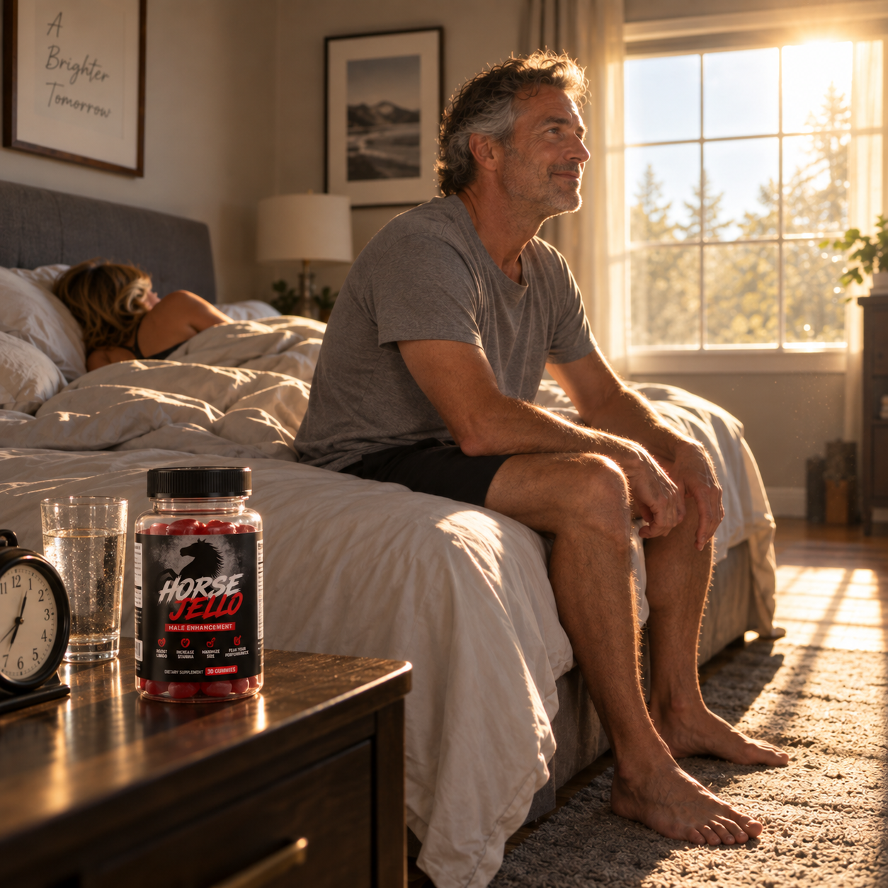
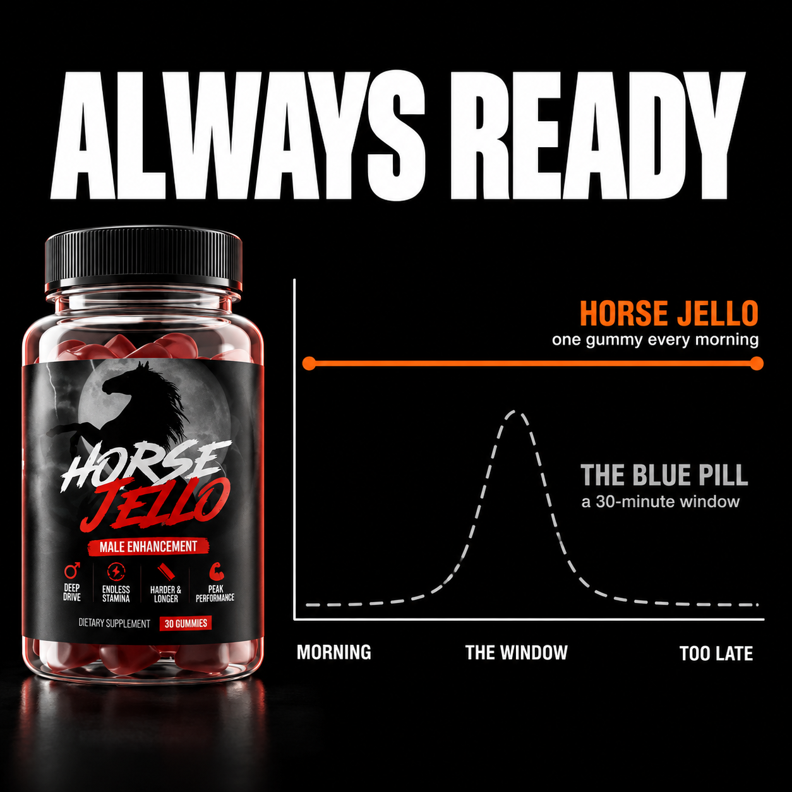
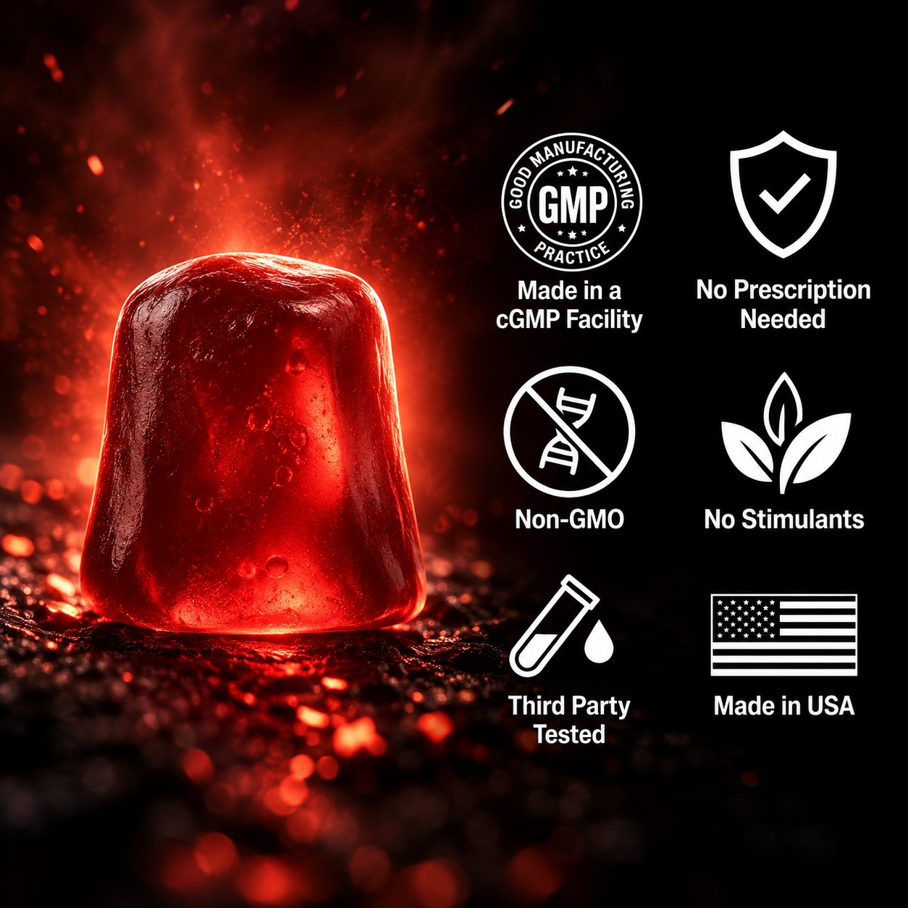
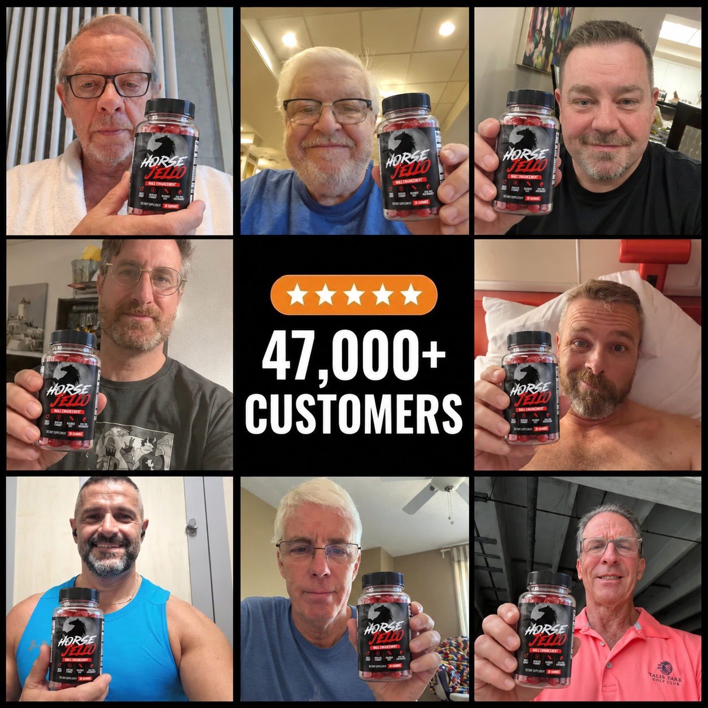
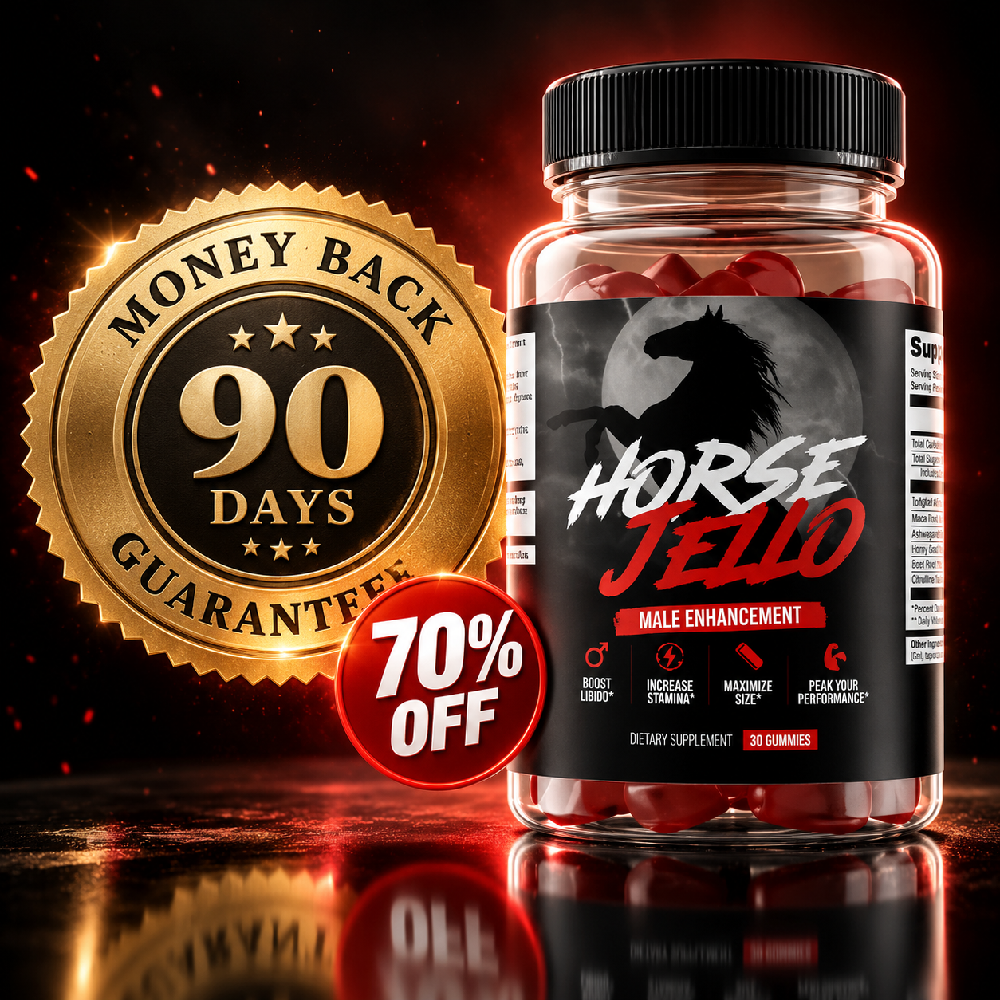
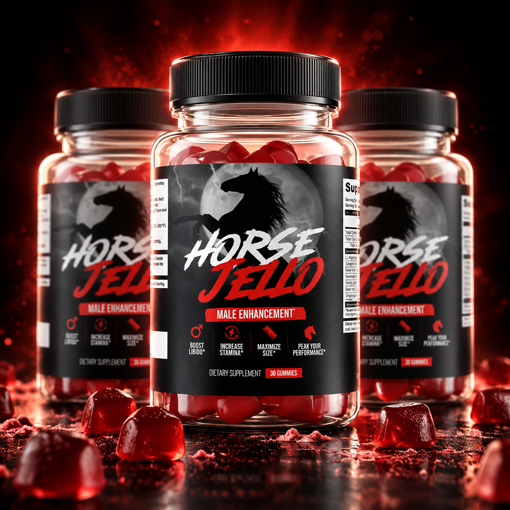

🌿 Natural Support⚡️ No Prescription🛡️ 90-Day Guarantee
"For years, men were told weak erections were about age, testosterone, or blood flow. All three explanations are wrong. Here's what's actually happening — and why it can be rebuilt."
Read this BEFORE you refill that prescription 👇

Every man hears the same four words: it's normal at your age. That explanation is wrong, and it kept me stuck for two years.
Inside your penis is tissue that works like a sponge. Blood arrives, the sponge expands, traps it, locks it in. That's the entire machine.
What nobody told you is that sponge can slowly fill with something hard. Elastic tissue converts into scar tissue. And scar does not swell. Run your hand over an old scar on your arm — it doesn't stretch, doesn't expand, doesn't grow. That's what's happening inside.
That's not aging. That's a structural change. And structure can be rebuilt.
Glyphosate — the active ingredient in Roundup — is in food, water, bread, beer, meat. It is everywhere, and it accumulates.
It binds to type III collagen, the elastic fiber that gives the sponge its ability to expand. Over years, that elasticity converts to rigidity. Elastic collagen becomes scar collagen.
I call the hardened areas Toxic Plaques. Doctors call it fibrosis. Same thing. The result is weak erections, erections that don't hold, loss of firmness during penetration, and the slow death of a sex life.
Viagra and Cialis do one thing: they increase how much blood arrives. That's it. They were built for a circulation problem.
But if the tissue receiving that blood can't open, more blood changes nothing. It's forcing water into a hose that's clogged on the inside. The pressure rises. The water still doesn't get through.
I call it stepping on the gas with the parking brake on. Press harder all you want — the car doesn't move, and the engine takes the strain.
This isn't a failure of the pill. It's a tool built for a different problem than the one you have.
I did three months of replacement therapy. My lab numbers came back beautiful. My doctor looked at the paper and told me everything was fine. In bed, nothing changed.
Testosterone raises the signal. But the signal was never broken. You still want her — that's why you're reading this. The desire is intact.
Everything upstream is working. The brain sends the signal correctly. The heart pumps blood correctly. The failure is at the one point nobody tests: the tissue that's supposed to receive it.

After 25 years formulating, I only ask one question about any ingredient: has this been tested in real men, more than once, by people with nothing to sell?
Most supplements fail that question instantly. Here's how these four answered it.
Vitamin C. This one isn't even debatable. Your body cannot build collagen without it. Not "builds it better with" — cannot, at all. It's why sailors got scurvy, and why their old scars split back open at sea. Their bodies had stopped being able to hold tissue together. So if the plan is to rebuild elastic tissue, this is the mortar. Bricks without mortar is just a pile.
Pycnogenol. Bark extract from French maritime pine. Researchers have pooled the controlled trials on it for erectile function — 184 men across multiple studies, analyzed together. What it does is switch on the enzyme that tells your blood vessels to open. Not force. Switch on.
Tongkat Ali. Same treatment: researchers gathered the clinical trials and analyzed them as one body of evidence. The finding was higher total testosterone in men. A separate six-month trial, double-blind and placebo-controlled, also measured improvement in erectile function.
That's the level of evidence I'm talking about. Not one study somebody found and quoted. Multiple trials, pooled and re-analyzed, published.
And the fourth ingredient? That's the one the internet got hold of and ruined. I'll show you exactly how in reason #8.

Most men expect the erection back first. It isn't.
What comes back first is the silence.
The calculation stops. You stop doing math on the way home — is tonight a night, should I take something, what if it happens again. That running commentary you've had going for years just isn't there anymore.
Then the mornings. Not strong at first. But real, and spontaneous, and for most men the first one in years. You wake up and something you'd written off is just there, like it used to be.
Then the rest arrives, and men are always surprised by this part. The 3pm crash disappears. Weights move in the gym the way they used to. You sleep through the night and actually wake up rested.
And somewhere in there, the thing that matters most: she reaches over and you don't flinch. You stop being the man who goes to bed after she falls asleep.
You didn't just get an erection back. You got the whole day back.

Pill-dependent sex has a texture to it and every man on it knows exactly what I mean. The 30-minute window. The calculation. Putting your own sex life on a calendar like a dentist appointment.
I hated that more than I hated the failure itself. Because the spontaneous version — the one where she reaches over and your body just answers — that version ended the day the pill became the plan.
Horse Jello isn't taken before sex. It's one gummy in the morning. It works in the background, and the body is simply ready when it's ready.

Pay attention here, because this is exactly what happened to you if you already tried the trick you saw online.
I got the gelatin. I took it every morning. Five weeks. Nothing at all. I nearly wrote it off as another dead hypothesis.
What stopped me was something basic I should have known on day one, and only remembered because formulation is literally my job:
Raw material is not a finished structure.
You can dump a truckload of bricks on an empty lot. The wall doesn't build itself. The bricklayer was missing — and then two more pieces after that.
That's what the internet did. The post got shared, summarized, re-recorded, simplified. What survived in the videos was the horse, because the horse is the part that gets views. The other three steps aren't dramatic, so nobody filmed them.
If you tried it and felt nothing: you didn't fail. You got one leg of a four-legged chair.
Remove one and the structure collapses. That's not marketing. That's five wasted weeks of my own life.

Morning wood isn't random. It's your body running a maintenance cycle on the tissue overnight — testing the structure, confirming the system still works.
Its absence means something structural has changed. Its return means the tissue is responding again. That's why it's the first thing men report, usually before anything else.
47,000+ men have gone through this. Men who were told this was just aging. Men who decided "this is how it is now" wasn't an answer they were going to accept.
You're reading reason #9. You're probably that kind of man too.

90 days. Full bottle or empty. No return shipping. No restocking fee. Full refund, no questions.
90 days because that's how long real tissue repair takes. My first morning erection came on day six — real, and early. But the man having sex like he was thirty again was month three. Damaged tissue does not rebuild itself in a few weeks. That's biology, and nothing changes it.
Thirty days isn't a guarantee. It's a trapdoor. It closes right before the part where the result shows up.
So either this rebuilds what you lost, or you get every dollar back. Those are the only two outcomes on the table.
The window to rebuild this tissue is open right now. In two years it will be smaller.

SAVE 70% + FREE SHIPPING TODAY
Limited-time offer while stock lasts
⚠️ Only 12 units left in stock
Check Availability & Claim My Discount Fast & free USA shipping90-day money-back guarantee FDA-registered facility No questions asked